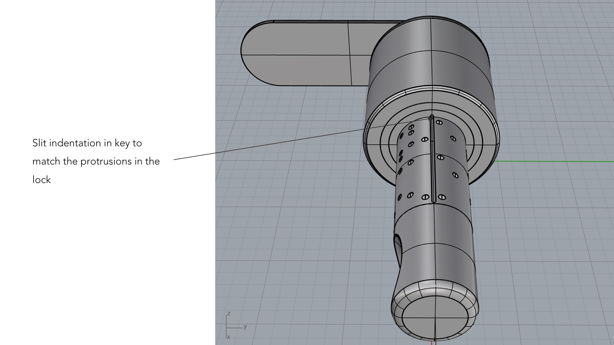
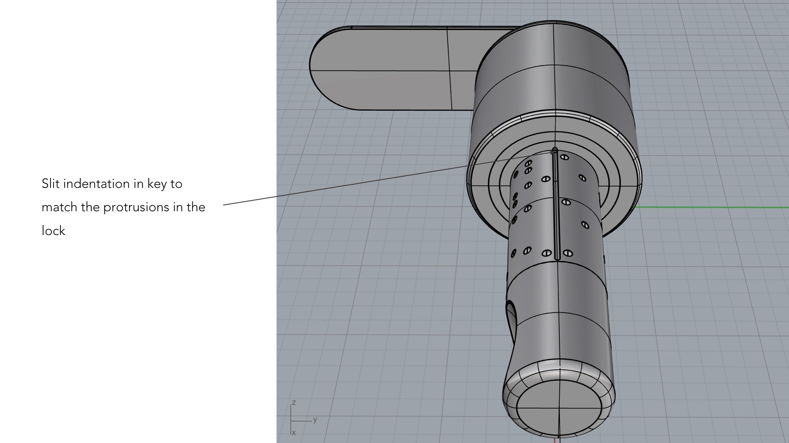

KeX
2018
Using generative software Grasshopper on Rhinoceros, I propose a new idea for a key that leverages on the infinite permutations and randomness a software can offer.
*This project is being patented under NUS ILO

Using generative software Grasshopper on Rhinoceros, I propose a new idea for a key that leverages on the infinite permutations and randomness a software can offer.
*This project is being patented under NUS ILO
